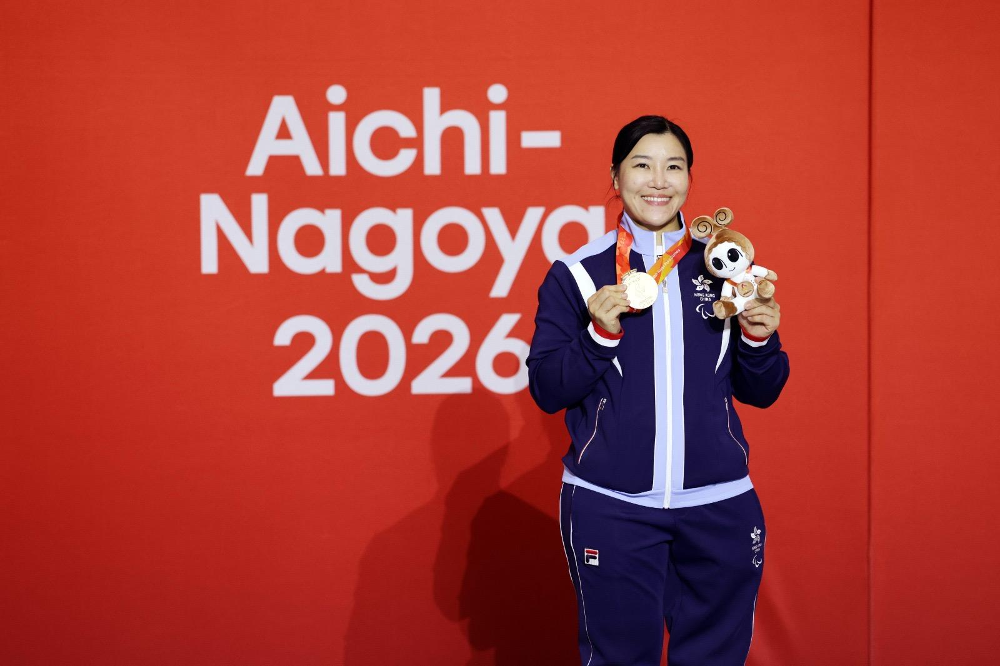

others2026-10-20 00:30 · 亞殘運中國香港代表團
亞殘運港隊首個獎牌日奪1銀2銅 余翠怡女花摘銅連續五屆有牌
Hong Kong Wins 1 Silver and 2 Bronzes on First Medal Day at Asian Para Games as Veteran Yu Chui-yee Takes Fencing Bronze
亚残运港队首个奖牌日夺1银2铜 余翠怡女花摘铜连续五届有牌
第五屆亞洲殘疾人運動會昨日（19日）上演首個獎牌賽日，港隊即奪1銀2銅。「輪椅劍后」余翠怡在女子花劍A級個人賽奪得銅牌，為港隊贏得今屆首面獎牌，連續五屆亞殘運有牌落袋。游泳方面，劉肖儀在女子S14級200米自由泳游出2分12秒04奪銀，黃漢彥在男子S14級200米自由泳以1分59秒15摘銅。
42歲的余翠怡以頭號種子身份直入16強，先後以15:3大勝伊拉克代表、15:11擊敗泰國對手晉級四強；雖然準決賽以9:15不敵中國的鄒緒鳳，但賽事不設季軍戰，穩袋一面銅牌。乒乓球方面，港隊7位球手晉級四強，在不設銅牌戰下已穩奪7面獎牌：焦瑾珊、王愉程（女子7級）、彭穎加（女子6級）、王志賢、黃翰林、林恩羽（男子9級），以及在女子11級以局數3:2擊敗日本Natsuki Wada的王婷莛。
今屆亞殘運設18個競賽項目，中國香港代表團由150人組成，派出80名運動員參與硬地滾球、射箭、田徑、羽毛球、劍擊、游泳、乒乓球、跆拳道、射擊及網球共10個體育項目。